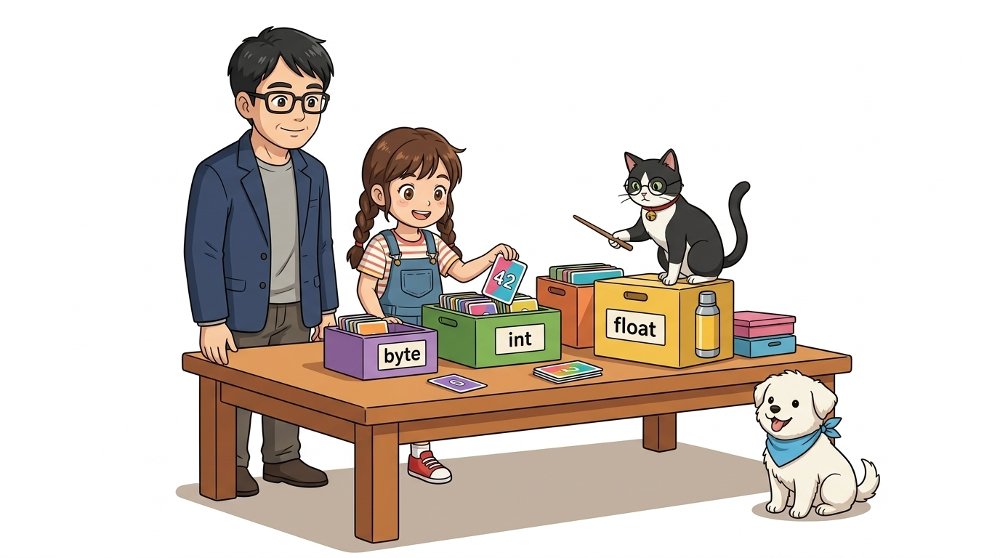
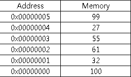
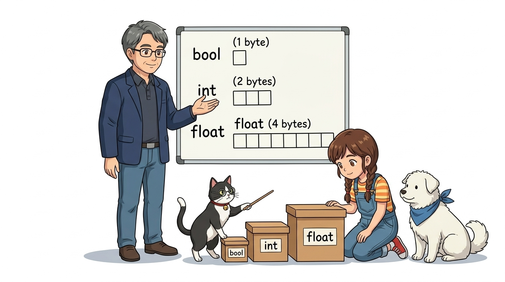
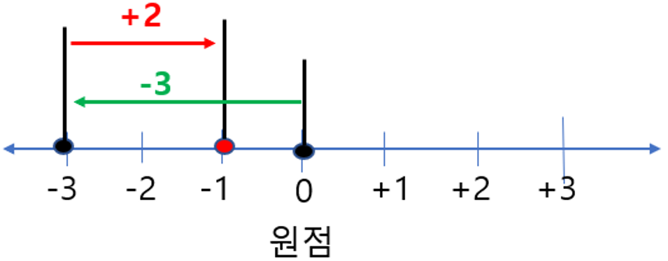
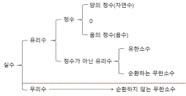
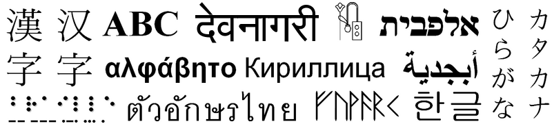
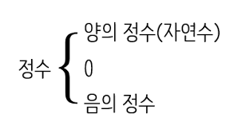
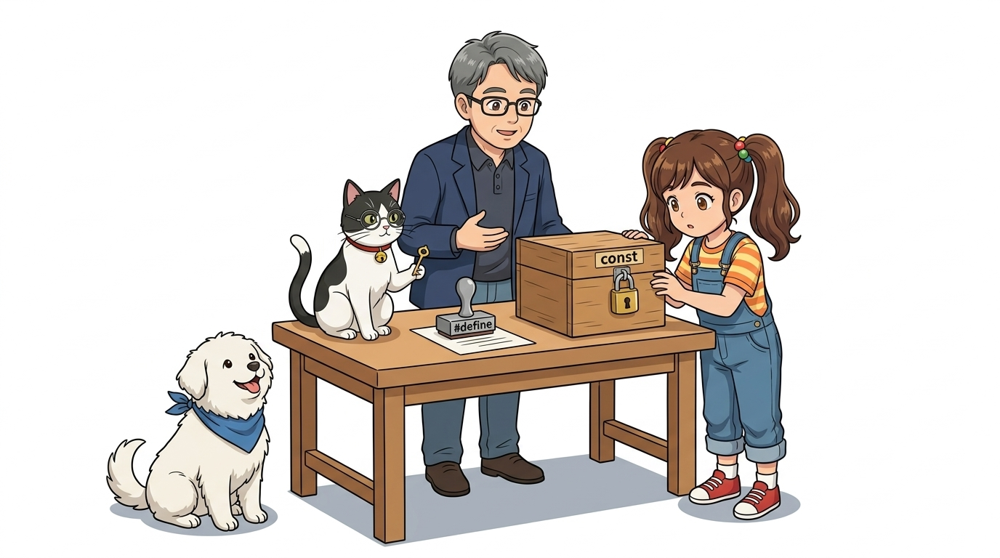
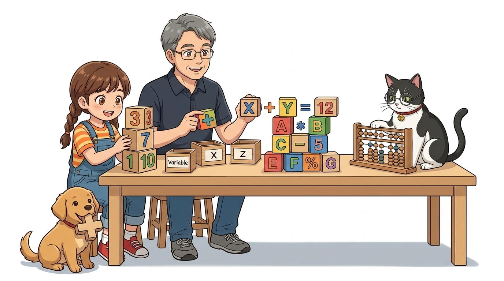
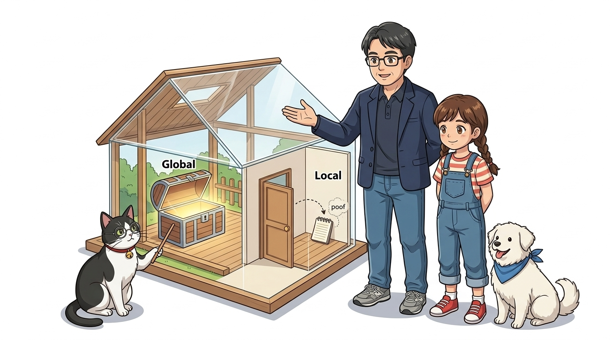

022_C언어기초2_이름표상자변수 📦🧮
👧 도로시: “교수님! 센서가 잰 온도나 버튼 누른 횟수를 프로그램 안에서 계속 기억하고 계산하려면 어떻게 해야 하나요?”
👨🏫 호진 교수님: “그럴 땐 이름표가 붙은 마법의 보관 상자 ‘변수(Variable)’와 수학 계산기 ‘연산자(Operators)’를 쓰면 된단다. 언제든 새로운 값을 넣고 연산할 수 있지!”
🐱 조수 지니: “야옹! 상자마다 크기와 담을 수 있는 데이터 종류(자료형)가 정해져 있으니 알맞은 규격을 골라야 한답니다!”
🐶 토토: “멍멍! (상자마다 크기와 담을 수 있는 물건이 다르다 멍!)”

- 🖥️ 강의 슬라이드: slides.md
1. 변수(Variable)란 무엇일까요? 🔄
- 수학에서 유래한 개념으로 “변할 수 있는 수”를 뜻해요.
- 프로그래밍에서는 컴퓨터 메모리(RAM)의 특정 저장 공간에 값을 넣고 빼기 위해 붙여준 이름표예요.
- 수학 공식에서 $x$에 어떤 숫자가 들어가느냐에 따라 결과 $y$가 달라지듯, 코드에서도 변수에 담긴 값에 따라 아두이노의 동작이 실시간으로 바뀝니다!

2. 메모리 주소 대신 친근한 이름표! 🏷️
- 컴퓨터 메모리(SRAM)의 실제 위치는
0x0042처럼 사람이 외우기 힘든 16진수 번지수로 되어 있어요. - 사람이 이 복잡한 번호를 직접 기억하고 쓰기 어렵기 때문에, 기억하기 쉬운 별칭(이름표)을 붙여주는 것이 바로 변수명(Variable Name)이에요!
int score = 99; // '0x0042' 주소에 'score'라는 이름을 붙이고 정수 99를 저장!
📌 좋은 변수 이름 짓기 3대 규칙
- 의미 있는 이름:
a,b대신ledPin,sensorValue,buttonState처럼 담긴 뜻이 명확한 단어를 사용합니다. - 카멜 표기법 (camelCase): 여러 단어를 조합할 때 첫 단어는 소문자, 두 번째 단어부터 첫 글자를 대문자로 씁니다 (예:
ledBlinkInterval). - 금지 규칙: 숫자로 시작할 수 없으며 (
1stPin❌), 공백이나 특수문자(-,@) 및 C언어 예약어(int,void등)는 변수명으로 쓸 수 없습니다.

3. 왜 다양한 ‘자료형(Data Type)’이 필요할까요? 📐
- 아두이노 우노(ATmega328P)의 메모리(SRAM)는 단 2KB(2,048 바이트)로 매우 작아요!
- 작은 동전 하나를 거대한 옷장에 담으면 공간이 낭비되고, 거대한 이불을 작은 서랍에 억지로 넣으면 터져버리겠죠?
- C언어는 메모리를 가장 알뜰하게 쓰기 위해 데이터 종류와 크기에 꼭 맞는 규격 상자(자료형)를 준비합니다.
| 자료형 | 크기 (메모리) | 저장 가능한 값의 범위 | 대표적인 아두이노 용도 |
|---|---|---|---|
bool |
1 바이트 | true (1) 또는 false (0) |
스위치 눌림 감지, On/Off 상태 플래그 |
byte |
1 바이트 (8비트) | 0 ~ 255 |
디지털 핀 번호, PWM 밝기, 모터 속도 |
char |
1 바이트 (8비트) | -128 ~ 127 또는 단일 문자 |
ASCII 영문자 ('A', 'Z', '1') |
int |
2 바이트 (16비트) | -32,768 ~ +32,767 |
아날로그 센서 읽기 (0 ~ 1023), 루프 카운터 |
unsigned int |
2 바이트 (16비트) | 0 ~ 65,535 |
음수가 필요 없는 양수 전용 카운터 |
unsigned long |
4 바이트 (32비트) | 0 ~ 4,294,967,295 (약 43억) |
millis() 시간 측정, 타이머 (필수!) |
float |
4 바이트 (32비트) | 소수점 6~7자리 정밀도 | 온습도 센서 측정값, 거리 센서 계산 |

4. 정수를 담는 상자: int와 byte 🔢
- 소수점이 없는 양수, 음수, 0을 저장하는 대표적인 정수형 상자입니다.
- 아두이노 우노(8비트 MCU)에서
int는 2바이트(16비트) 크기를 차지합니다:- 저장 가능 범위: $-32,768 \sim +32,767$
int sensorVal = analogRead(A0); // 0 ~ 1023 사이의 아날로그 측정값 저장
int counter = 0; // 횟수 카운터
💡 1바이트 챔피언 byte 적극 활용하기!
- 아두이노 핀 번호(0~13, A0~A5)나 PWM 밝기(0~255)는 결코 255를 넘지 않습니다.
- 이때
int대신byte를 사용하면 메모리를 절반이나 절약할 수 있습니다!
byte ledPin = 13; // 1바이트만 절약하여 사용!
byte brightness = 200; // 0 ~ 255 PWM 값

5. 소수점을 담는 상자: float (부동소수점) 🌡️
- 온도 센서, 습도 센서, 초음파 거리 센서처럼 소수점이 필요한 정밀한 측정값을 담아요.
- 4바이트(32비트)를 사용하며, 소수점의 위치가 둥둥 떠다니며 정밀도를 유지합니다.
float temperature = 26.75; // 방 온도 26.75°C
float distanceCm = 15.3; // 장애물 거리 15.3cm
👧 도로시: “센서가 잰 온도가 딱 26도가 아니라 26.3도일 때는 꼭
float을 써야겠네!”
🐱 조수 지니: “맞아! 다만 아두이노의 8비트 프로세서는 소수점 계산에 힘을 많이 쓰니, 꼭 정밀도가 필요한 곳에만 쓰는 것이 임베디드 최적화의 비결이란다!”

6. 글자 하나를 담는 상자: char (Character) 🔤
- 컴퓨터는 사실 글자를 직접 알지 못해요. 오직 0과 1의 숫자만 알 수 있죠!
- 대신 전 세계가 약속한 아스키 코드(ASCII Code) 표를 사용하여 글자에 숫자를 대응시킵니다:
- 대문자
'A'는 숫자 65, 소문자'a'는 97, 숫자 문자'0'은 48이에요.
- 대문자
char상자는 딱 1바이트(8비트) 크기로 글자 하나를 작은따옴표(' ')로 감싸서 저장합니다.
char command = 'S'; // 모터 정지(Stop) 명령 문자 저장
if (command == 'S') {
stopMotors();
}

7. 스위치를 닮은 참/거짓 상자: bool (Boolean) 💡
- 꺼짐(0) 또는 켜짐(1), 거짓(
false) 또는 참(true) 딱 두 가지만 담는 가장 단순하고 명확한 상자예요. - 스위치가 눌렸는지, 화재가 감지되었는지 시스템의 상태를 기억할 때 필수적입니다.
bool isLedOn = true; // LED가 켜져 있으면 참(true)!
bool buttonPressed = false; // 버튼에서 손을 뗐으면 거짓(false)!
🐶 토토: “멍멍! (토토가 배고프면 isHungry = true 다 멍!)”
👧 도로시: “다음 시간에 배울 조건문if와 결합하면 똑똑한 로봇을 만들 수 있겠어!”

8. 변하지 않는 고정값: const와 #define 🔒
핀 번호처럼 실행 도중에 절대로 바뀌어서는 안 되는 값은 상수로 선언하여 코드의 안전성을 높이고 실수를 방지합니다.
// 1. C++ 상수 키워드 const (권장)
const byte LED_PIN = 13; // 읽기 전용 상수로 잠금!
// LED_PIN = 12; // ❌ 컴파일러가 오류를 잡아내어 실수 방지!
// 2. 전처리기 매크로 #define
#define BUZZER_PIN 8 // 컴파일 전 글자 치환 (SRAM 소모 0바이트!)
📌 const vs #define 비교
const: 자료형 검사를 수행하므로 안전하며 디버깅이 쉽습니다.#define: 코드 컴파일 직전에 단순 문자열로 치환되므로 변수 메모리(RAM)를 전혀 차지하지 않습니다.

9. C언어 핵심 연산자 총정리 🧮
변수에 담긴 값을 더하고, 빼고, 배수로 불리는 C언어의 연산 기호들입니다.
int a = 10;
int b = 3;
int sum = a + b; // 13 (덧셈)
int diff = a - b; // 7 (뺄셈)
int mult = a * b; // 30 (곱셈)
int div = a / b; // 3 (정수 나눗셈 몫!)
int rem = a % b; // 1 (나머지 연산자!)
⚠️ [주의] 정수 나눗셈의 치명적인 함정!
int끼리 나누면 소수점이 무조건 버려집니다:5 / 2의 결과는2.5가 아니라2입니다!- 소수점까지 구하려면 둘 중 하나를 실수로 변환해야 합니다:
(float)5 / 2➡️2.5
🌟 마법의 나머지 연산자 (%)
counter % 2 == 0: 짝수/홀수 판별에 사용 (LED 깜빡임 토글!)step = (step + 1) % 4: 0 ➡️ 1 ➡️ 2 ➡️ 3 ➡️ 0 순환 카운터 구현!
📌 복합 대입 연산자와 증감 연산자
x += 5;➡️x = x + 5;(밝기 5 증가)x -= 2;➡️x = x - 2;(속도 2 감소)counter++;➡️counter = counter + 1;(1씩 카운트 증가)

10. 아두이노 코딩의 최대 복병! 변수의 유효 범위(Scope) 🌐🏠
아두이노 입문자들이 가장 많이 겪는 미스터리 버그는 “변수를 어디에 선언했는가?”에서 발생합니다.
// [1] 전역 변수 (Global Variable): 함수 바깥에 선언!
int pushCount = 0; // 스케치 전체가 공유하며, 값이 영원히 보존됨!
void setup() {
Serial.begin(9600);
}
void loop() {
// ❌ 초보자의 치명적 실수!
// int localCount = 0; // loop()가 돌 때마다 매번 0으로 리셋됨!
pushCount++; // 전역 변수는 loop()가 반복되어도 계속 1, 2, 3... 증가!
Serial.println(pushCount);
delay(1000);
}
📌 전역 변수(Global) vs 지역 변수(Local) 비교
- 전역 변수 (Global):
- 함수 바깥(맨 윗줄)에 선언.
setup(),loop(), 사용자 함수 어디서든 읽고 쓸 수 있음.- 아두이노가 켜져 있는 동안 값이 메모리에 계속 보존됨.
- 지역 변수 (Local):
- 함수나 중괄호
{ }내부에 선언. - 해당 함수나 중괄호 블록 안에서만 살아있고, 블록을 벗어나면 즉시 메모리에서 소멸!
- 함수나 중괄호
[!WARNING] 누적 카운터, 센서 이전 측정값 등 시간이 지나도 유지되어야 하는 상태 변수는 반드시 전역 변수로 선언해야 합니다!

🌟 도로시와 지니의 이번 시간 핵심 정리! 🏆
축하합니다! 아두이노 메모리를 알뜰하게 다루는 변수 상자와 C언어 연산자의 핵심 규칙을 완벽히 마스터했습니다.

📋 핵심 요약 체크리스트
- 변수는 메모리 이름표: 알기 쉬운 이름과 camelCase 표기법을 준수합니다.
- 알맞은 자료형 선택: 핀 번호와 밝기는
byte, 시간 측정은unsigned long, 소수점은float! - 상수 보호: 변하지 않는 핀 번호는
const로 잠가 컴파일러 실수를 방지합니다. - 정수 나눗셈 함정 탈출:
5 / 2는2이므로, 소수점이 필요할 땐(float)형변환을 합니다. - 유효 범위(Scope):
loop()가 돌아도 값이 지워지지 않게 하려면 전역 변수로 선언합니다.
👧 도로시: “전역 변수와 지역 변수의 비밀을 알고 나니 이제 카운터 코딩도 완벽히 이해돼요!”
👨🏫 호진 교수님: “아주 훌륭하단다 도로시! 다음 시간에는 아두이노와 컴퓨터가 직접 글자로 대화하는 ‘시리얼 모니터’를 정복해 보자꾸나!”
🐱 조수 지니: “야옹! 지니 조수도 시리얼 통신 케이블을 챙겨서 대기할게요!”
🐶 토토: “멍멍! (컴퓨터와 대화하러 가자 멍!)”